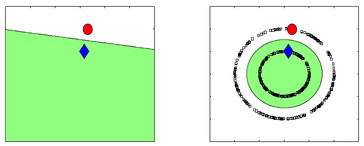
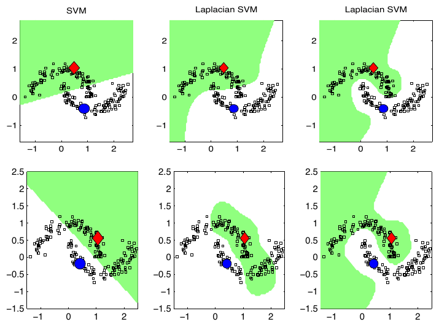
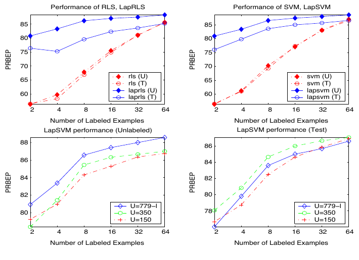

May 15, 2026
Belkin, Niyogi, and Sindhwani’s Manifold Regularization is
one of the central papers for understanding how graph Laplacian
smoothness entered kernel-based semi-supervised learning (Belkin, Niyogi, and
Sindhwani 2006). Its main move is to add an intrinsic geometric
penalty, estimated from labeled and unlabeled data through a graph
Laplacian, to the usual ambient reproducing kernel Hilbert space
regularizer. The resulting LapRLS and LapSVM algorithms remain ordinary
out-of-sample kernel predictors, but their fitted functions are
discouraged from varying rapidly across high-weight graph edges. For
conductance and kernel-Laplacian work, the most reusable part of the
paper is not any particular classifier. It is the clean decomposition
between an ambient extension norm and a graph/manifold Dirichlet energy.
For SIMODS and gflow, this paper is best treated as a
foundational reference for graph-signal smoothing by \(f^\top L f\), with the important caveat
that the authors speak of graph affinities and edge weights, not direct
length conductances or overlap-density conductances.
The paper starts from the basic semi-supervised question: when labels are rare but unlabeled examples are plentiful, what should the unlabeled examples be allowed to do? Belkin, Niyogi, and Sindhwani answer by treating unlabeled data as information about the marginal geometry of the input distribution. Labels still determine the empirical loss, but the unlabeled cloud supplies a notion of which variations are geometrically simple and which are unnecessarily oscillatory.
This is an important distinction. Many graph-based semi-supervised methods defined predictions only on the observed graph vertices. Manifold regularization instead keeps an ambient kernel predictor \[f(x) = \sum_i \alpha_i K(x_i,x),\] so new points can be evaluated after training. The graph enters through the regularizer, not by replacing the predictor with a purely transductive label propagation rule. That makes the paper a useful bridge between spectral graph methods, manifold learning, and RKHS regularization.
For the conductance/kernel-Laplacian review, the paper matters because it puts the graph Laplacian quadratic form in the middle of a learning objective. If \(W_{ij}\) is a large edge weight, then a large difference \(f(x_i)-f(x_j)\) is expensive. In graph signal language, this is a low-pass prior: functions with large edgewise variation on strong edges have high energy. That interpretation is derived synthesis for SIMODS, not the paper’s own terminology, but it follows directly from the objective.

The statistical setup is standard supervised learning enlarged by unlabeled samples. Labeled examples \((x_i,y_i)\) are drawn from a joint distribution \(P\) on \(\mathcal{X}\times\mathbb{R}\), while unlabeled examples \(x_j\) are drawn from the marginal distribution \(P_{\mathcal{X}}\). The paper is explicit that unlabeled data cannot help in a vacuum. They become useful only under an assumption tying the marginal geometry to the conditional distribution: nearby points in the intrinsic geometry of \(P_{\mathcal{X}}\) should have similar label behavior.
The reader needs three pieces of background.
First, a reproducing kernel Hilbert space (RKHS) is a Hilbert space of functions associated with a positive semidefinite kernel \(K\). Its norm \(\|f\|_K\) is a complexity or smoothness measure in the ambient input space. The classical representer theorem says that many regularized learning problems in an RKHS have finite kernel expansions over the labeled points.
Second, a graph Laplacian converts a weighted graph into a smoothness operator. With symmetric weights \(W_{ij}\) and degrees \(D_{ii}=\sum_j W_{ij}\), the unnormalized Laplacian is \(L=D-W\). A small value of \(f^\top L f\) means the signal \(f\) changes slowly across strongly weighted edges. The paper also notes that the symmetric normalized Laplacian \(\widetilde{L}=D^{-1/2}LD^{-1/2}\) can be used interchangeably in the formulas and says this normalized version is used in the Section 5 experiments.
Third, the manifold language supplies the continuum idealization. If the marginal distribution is supported on a compact manifold \(\mathcal{M}\), then the intrinsic smoothness of a function can be measured by the Dirichlet energy \[\int_{\mathcal{M}} \|\nabla_{\mathcal{M}} f(x)\|^2\,dP_{\mathcal{X}}(x).\] The empirical graph Laplacian is the finite-sample approximation used when the manifold and marginal distribution are unknown.
The paper begins with ordinary RKHS regularization, \[f^\ast = \operatorname*{arg\,min}_{f\in\mathcal{H}_K} \frac{1}{l}\sum_{i=1}^{l} V(x_i,y_i,f) + \gamma \|f\|_K^2,\] where \(V\) is a loss such as squared loss for regularized least squares or hinge loss for support vector machines. Manifold regularization adds a second penalty: \[f^\ast = \operatorname*{arg\,min}_{f\in\mathcal{H}_K} \frac{1}{l}\sum_{i=1}^{l} V(x_i,y_i,f) + \gamma_A \|f\|_K^2 + \gamma_I \|f\|_I^2 .\] The two coefficients have distinct roles. \(\gamma_A\) controls ambient RKHS complexity and stabilizes the out-of-sample extension. \(\gamma_I\) controls intrinsic smoothness along the data geometry.
The empirical version is the paper’s key formula for graph-Laplacian smoothing: \[\begin{split} f^\ast = \operatorname*{arg\,min}_{f\in\mathcal{H}_K} \frac{1}{l}\sum_{i=1}^{l} V(x_i,y_i,f) + \gamma_A \|f\|_K^2 + \frac{\gamma_I}{(u+l)^2} \sum_{i,j=1}^{u+l} (f(x_i)-f(x_j))^2 W_{ij}. \end{split}\] The paper then writes this intrinsic term as \(\gamma_I (u+l)^{-2} f^\top L f\), where \(L=D-W\). There is a harmless but important convention issue here. Under the common symmetric double-sum identity, \[f^\top L f = \frac{1}{2}\sum_{i,j} W_{ij}(f_i-f_j)^2 .\] The PDF prints the unhalved double sum as \(f^\top L f\). For optimization, the difference can be absorbed into \(\gamma_I\), but later SIMODS comparisons should avoid treating the printed equality as a universal normalization identity.
The empirical representer theorem is the algorithmic hinge. Even though only the first \(l\) points have labels, the minimizer has an expansion over all \(l+u\) labeled and unlabeled points: \[f^\ast(x)=\sum_{i=1}^{l+u}\alpha_i K(x_i,x).\] This is why unlabeled data can affect the fitted function without eliminating out-of-sample prediction. The graph changes the coefficients through \(L\); the ambient kernel still defines the function away from the graph vertices.
The paper deliberately separates two design choices. The first is the graph used to estimate intrinsic geometry. Table 1 recommends constructing an adjacency graph on all labeled and unlabeled examples, for example by \(k\)-nearest neighbors or by a graph kernel, and choosing weights such as binary weights or heat weights \[W_{ij} = \exp\left(-\frac{\|x_i-x_j\|^2}{4t}\right).\] The second is the ambient RKHS kernel \(K(x,y)\) used for out-of-sample prediction. These two kernels or weight systems need not be identical. In fact, one of the paper’s useful messages is that the graph can represent intrinsic data geometry while the ambient RKHS norm keeps the learned function well-posed and extendable.
This distinction is easy to lose in conductance language. For this review, \(W_{ij}\) can be interpreted as a conductance-like affinity because it weights the squared difference across an edge. The authors themselves call these entries edge weights. They do not propose inverse-length conductance, overlap-density conductance, or an adaptive local-bandwidth graph. Those are possible SIMODS comparators that can be inserted into the same quadratic form, not claims made by the paper.
The normalization details also matter. The empirical objective uses the factor \((u+l)^{-2}\) as a natural scale factor for estimating the continuum operator, and the paper says that on sparse adjacency graphs this may be replaced by a sum over weights. That sentence is terse; it should be treated as a normalization suggestion rather than a complete implementation rule. In addition, the normalized Laplacian remark means the experiments are degree normalized, which is important when translating conclusions to density-varying graphs.
For squared loss, the Laplacian regularized least squares objective becomes a finite-dimensional quadratic problem. Let \(K\) be the Gram matrix over all \(l+u\) points, let \(Y=[y_1,\ldots,y_l,0,\ldots,0]^\top\), and let \(J\) be the diagonal matrix with ones on labeled entries and zeros on unlabeled entries. The paper derives \[\alpha^\ast = \left( JK + \gamma_A l I + \frac{\gamma_I l}{(u+l)^2}LK \right)^{-1}Y .\] When \(\gamma_I=0\), the unlabeled coefficients vanish and the solution reduces to ordinary RLS on the labeled data.
For hinge loss, the paper switches notation in a way worth making explicit. In the LapRLS display above, \(J\) is a diagonal \((l+u)\times(l+u)\) mask and \(Y\) is a padded label vector. In the LapSVM derivation, \(J_{\mathrm{sel}} = [I\ 0]\) is instead an \(l\times(l+u)\) selector for the labeled rows, and \(Y_{\mathrm{lab}}=\operatorname{diag}(y_1,\ldots,y_l)\) is an \(l\times l\) diagonal label matrix. With that convention, LapSVM modifies the SVM dual through a quadratic form involving the graph Laplacian: \[Q = Y_{\mathrm{lab}}J_{\mathrm{sel}}K \left( 2\gamma_A I + \frac{2\gamma_I}{(l+u)^2}LK \right)^{-1} J_{\mathrm{sel}}^\top Y_{\mathrm{lab}} .\] The dual variables remain associated with labeled points, but the final kernel expansion coefficients are recovered through the linear system \[\alpha = \left( 2\gamma_A I + \frac{2\gamma_I}{(l+u)^2}LK \right)^{-1} J_{\mathrm{sel}}^\top Y_{\mathrm{lab}}\beta^\ast .\] This algebra is a nice expression of the paper’s central compromise: supervised labels define the margin constraints, while the unlabeled graph reshapes the geometry of the hypothesis space.

The theoretical core is a pair of representer results. In the known-marginal case, if the intrinsic norm is sufficiently smooth relative to the RKHS norm, the solution has a kernel-plus-integral representation over the support of the marginal distribution. The paper later gives a more technical operator version showing when this representation is valid for differential operators on compact manifolds.
In the empirical case, the theorem is simpler and more directly useful: with the graph penalty in the finite objective, the minimizer lies in the span of the kernels centered at all labeled and unlabeled samples. The proof is the standard orthogonality argument. Any component orthogonal to \[\mathrm{span}\{K(x_i,\cdot): i=1,\ldots,l+u\}\] does not affect the loss or the graph penalty, because those terms depend only on function values at sampled points. It can only increase \(\|f\|_K\). Therefore the minimizer drops that component.
One theoretical point is especially important for SIMODS. The paper
argues that intrinsic regularization alone is ill-posed because the true
manifold is not directly observed; only sampled points are available.
The ambient term is not decorative. It stabilizes the problem and
supplies behavior away from the sampled graph. In current or planned
gflow smoothers, the analogous question is what plays the
role of an ambient or off-graph stabilizer when smoothing is performed
only on a precomputed graph.
The paper also cautions against a tempting but weak intrinsic norm. If the intrinsic norm is just the RKHS norm of the restriction of \(f\) to the manifold, then the solution collapses to ordinary regularization with a different regularization parameter. A distinct intrinsic smoothness measure, such as a manifold gradient or graph Laplacian energy, is needed for unlabeled geometry to change the learner.
The experiments are broad enough to show that the framework is not just a two-moons illustration, but they should still be read as early evidence rather than a complete modern benchmark. The authors compare LapRLS and LapSVM with RLS, SVM, and often TSVM on synthetic, digit, speech, and text tasks.
On USPS pairwise digit classification, they use only two labeled images per class with 398 unlabeled images and polynomial degree-three kernels. Across 45 binary tasks, the manifold methods usually improve over RLS and SVM, and LapSVM is reported as more stable than TSVM with respect to the labeled sample. In one-vs-rest multiclass USPS experiments, the reported error rates are: \[\begin{array}{lccccc} \toprule \text{Method} & \text{SVM} & \text{TSVM} & \text{LapSVM} & \text{RLS} & \text{LapRLS}\\ \midrule \text{Error} & 23.6 & 26.5 & 12.7 & 23.6 & 12.7\\ \bottomrule \end{array}\] The striking feature is not only the lower error; it is that the out-of-sample test behavior tracks the unlabeled-set behavior, supporting the claim that the RKHS extension is doing real work.
On Isolet spoken-letter recognition, the gains are smaller on a held-out speaker group than on unlabeled speakers from the same group, but they remain consistent. In the reported 26-class one-vs-rest experiment, LapRLS and LapSVM improve by roughly three to four percentage points over their supervised counterparts on the separate test group. TSVM performs poorly in that setup, reinforcing the paper’s practical distinction between a graph-regularized convex formulation and a nonconvex label-assignment transductive optimization.
The WebKB text experiment is useful for this review because it shows how the framework accommodates non-Euclidean feature choices. The paper uses a linear ambient kernel, 15-nearest-neighbor graphs, iterated Laplacians of degree 3, and graph construction described as “weighted by cosine distances.” The exact transformation from cosine distance to graph weight is not specified, so a later synthesis should preserve that ambiguity rather than silently converting the phrase into cosine similarity or a heat kernel.

The authors are careful about some comparisons. For WebKB, they state that external comparator datasets and protocols differ, so those numbers are meant to suggest state-of-the-art-like behavior rather than settle a controlled ranking. That caution is part of the evidence and should carry forward.
Although the paper’s main focus is semi-supervised learning, Section 6.1 sketches an unsupervised version that is directly relevant to graph Laplacian embeddings. With no labeled loss, the objective balances ambient RKHS smoothness against graph smoothness under centering and normalization constraints: \[f^\ast = \operatorname*{arg\,min}_{\substack{ f\in\mathcal{H}_K\\ \sum_i f(x_i)=0,\ \sum_i f(x_i)^2=1 }} \gamma\|f\|_K^2 + \sum_{i\sim j}(f(x_i)-f(x_j))^2 .\] Substitution of the finite kernel expansion yields a generalized eigenproblem \[P(\gamma K + KLK)Pv = \lambda P K^2 Pv,\] where \(P\) projects away the constant direction induced by the constraints. The paper presents this as regularized spectral clustering and as an out-of-sample extension of Laplacian Eigenmaps when multiple eigenvectors are used.
This section is not the main reason to cite the paper for SIMODS, but it is conceptually helpful. It shows that the same split between graph smoothness and ambient RKHS extension can support supervised prediction, semi-supervised prediction, clustering, and representation learning. The role of \(L\) remains the same: it penalizes edgewise variation on the data graph.
The paper is explicit about several limits. Unlabeled data help only when the marginal distribution is informative about the conditional distribution. If labels vary in a way unrelated to marginal geometry, manifold regularization has no reason to improve learning.
Model selection is also unresolved. The authors specifically identify the choice of \(\gamma_A\) and \(\gamma_I\) as an open problem, and their experiments show why this matters. In the WebKB unlabeled-set experiment, increasing the amount of unlabeled data improves transductive behavior more consistently than test behavior, plausibly because fixed parameters become suboptimal as the unlabeled graph changes. For graph-signal smoothing work, this is a direct warning: a conductance or kernel change and a regularization-parameter change are not independent perturbations.
Scalability is another limitation. The exact kernel algorithms involve dense Gram matrices and can require \(O((l+u)^3)\) computation. The paper mentions primal methods for linear kernels, conjugate-gradient schemes for sparse text data, and approximate basis expansions as ways forward, but large-scale algorithms are left as future work.
Finally, the paper does not solve graph construction. It allows kNN graphs, graph kernels, binary weights, heat weights, cosine-distance choices, and iterated Laplacians, but it does not develop a theory of adaptive scale selection, local bandwidths, inverse-length conductance, or overlap-density conductance. Its transferable claim is the regularization principle once an \(L\) has been chosen.
gflowThe most direct SIMODS reuse is the interpretation of graph smoothing as a Dirichlet-energy penalty. Given a graph signal \(f\) and a Laplacian \(L\), the term \(f^\top L f\) penalizes graph-high-frequency variation. Larger edge weights make disagreement across that edge more expensive. Therefore, changing binary weights to heat weights, inverse-length conductances, self-tuned affinities, or overlap-density conductances changes the implicit notion of smoothness even if the graph topology is unchanged.
That statement is SIMODS synthesis. The paper itself supports the
algebraic principle through Equation (4), Table 1, and the LapRLS/LapSVM
derivations, but it does not discuss gflow’s current
implementation. Current gflow overlap-density smoothing
should therefore remain distinct from P06’s heat/cosine/binary affinity
examples. P06 can justify the comparator frame–“a graph weight matrix
defines a smoothness regularizer”–but it is not evidence that the
present overlap-density operator is a length-conductance method.
The intrinsic/extrinsic split is the second important reuse. In the paper, \(\gamma_I f^\top Lf\) expresses smoothness over the sampled geometry, while \(\gamma_A\|f\|_K^2\) keeps the function well-posed away from the sample. SIMODS smoothers that operate entirely on a graph may not need an RKHS extension, but they still need to answer the analogous question: what prevents the smoother from over-trusting a noisy, disconnected, or density-biased sample graph?
For the final conductance/kernel-Laplacian synthesis, the safest reusable claims are these:
A graph Laplacian quadratic form can be used as an intrinsic smoothness regularizer inside a learning objective.
Labeled and unlabeled data can both appear in the kernel expansion even when only labeled data appear in the loss.
The paper separates graph geometry from ambient RKHS extension; this is a useful model for separating graph-signal smoothing from off-graph prediction.
Edge weights in \(W\) are conductance-like only in the derived sense that they multiply squared edge differences. The paper’s own language is affinity or edge weight.
Normalization conventions matter: the printed Equation (4) uses a double-sum convention that differs by a factor of two from the common symmetric identity, and the experiments use the normalized Laplacian.
The claims to avoid are just as important. Do not cite this paper as
support for adaptive local bandwidths, direct inverse-length
conductances, current gflow overlap-density conductance, or
graph-to-layout geodesic reconstruction. It is a kernel/manifold
regularization paper whose enduring value for SIMODS is the principled
use of graph Laplacian energy as an intrinsic smoothness prior.
Primary source: local canonical P06 PDF in , 36 pages; the archived
SHA-256 is recorded in the P06 Markdown memo. Archival scaffolding:
local Reviewer-P06 Markdown memo and Auditor-P06 audit memo dated May
15, 2026. Figure screenshots are internal-review captures listed in ;
included image paths use . The prose above distinguishes claims made by
the paper from SIMODS/gflow synthesis where the
interpretation is derived rather than explicit.